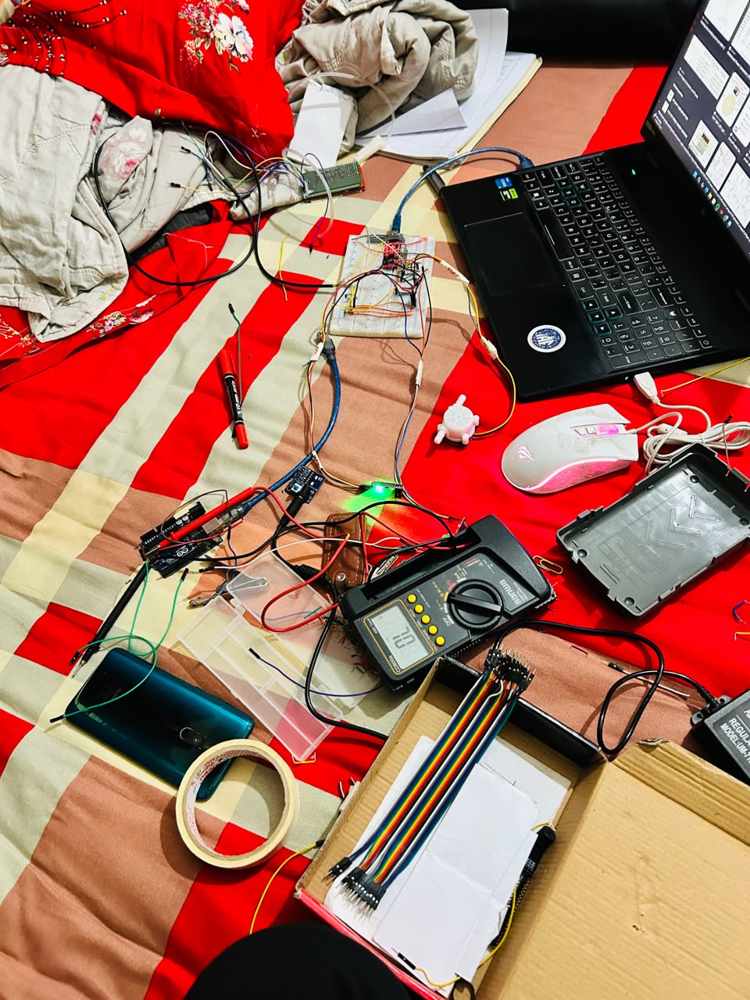
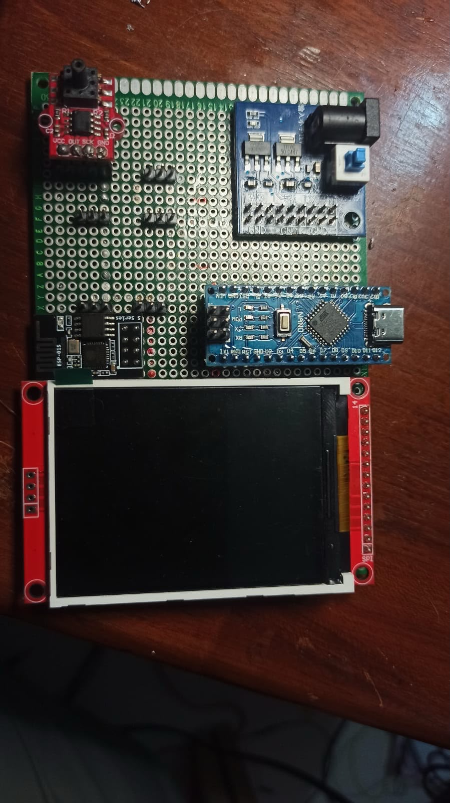
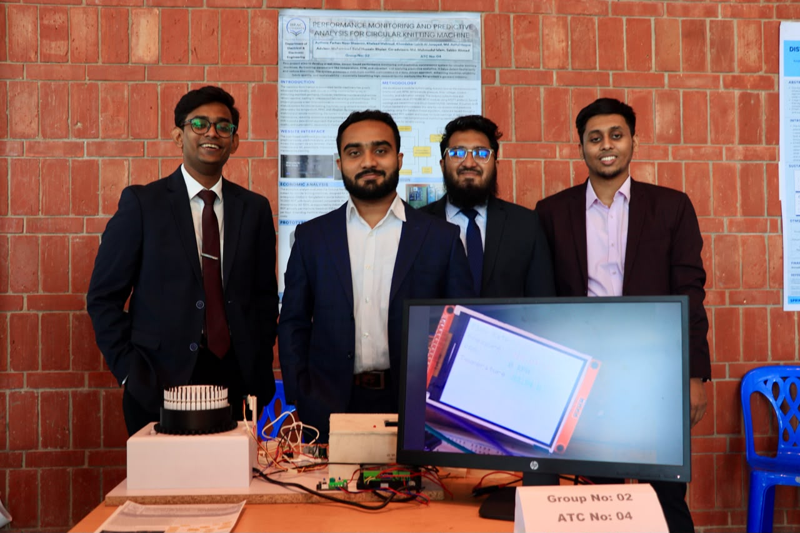

Operating parameters and physical-condition signals from the knitting machine.
Selected work
Evidence before presentation.
Detailed project and programme case studies showing the problem, my contribution, technical stack, implementation process and evidence.
Featured engineering case study
Performance monitoring and analysis for predictive maintenance of a circular knitting machine.
Unplanned machine downtime can interrupt production and increase maintenance cost. This final-year design project explored an IoT-enabled monitoring system that collects machine-condition data, presents critical parameters on a dashboard and supports predictive-maintenance analysis.
The project combined embedded hardware, data acquisition, communication and analytical work. The result was demonstrated through a physical prototype, project poster and live showcase.
ContextFinal Year Design Project
InstitutionBRAC University
CompletedMay 2025
Core technologiesESP32 · IoT · Python · MATLAB/Simulink


System architecture
From machine condition to maintenance decision.
Condition variables are measured and converted into usable electrical signals.
Embedded acquisition, local processing and communication.
Critical machine parameters presented for real-time observation.
Python and MATLAB-based analysis to support maintenance planning.
My contribution
What I actually worked on.
This section separates verified contribution from general team ownership.
System development
- Contributed to the IoT-enabled condition-monitoring architecture.
- Integrated ESP32-based hardware with sensing and communication elements.
- Supported testing and prototype refinement.
Dashboard and analysis
- Built a dashboard for monitoring critical machine parameters.
- Used Python and MATLAB/Simulink within the analysis workflow.
- Supported the predictive-maintenance decision concept.
Research communication
- Structured the project story for poster and live presentation.
- Documented the system architecture, workflow and results.
- Explained the prototype to visitors during the showcase.
Engineering workflow
- Worked across hardware, software and presentation requirements.
- Coordinated tasks within a multidisciplinary student team.
- Connected technical implementation with a practical industrial problem.
Physical evidence
Prototype, test bench and team presentation.
These are original project photographs, used only where they directly document the work.



Research operations case
Safe Fall Dataset.
At the Biomedical Science and Engineering Research Center, I led the operational development of a human fall-detection dataset using sensors and cameras for AI-based healthcare applications.
My role focused on turning a research objective into a repeatable data-collection workflow through planning, hardware setup and coordination.
Project planning
Structured activities, responsibilities and data-collection requirements.
Hardware setup
Coordinated sensor and camera arrangements required for collection.
Data collection
Supported consistent execution and documentation of sessions.
Research coordination
Connected researchers, logistics and operational requirements.

Programme delivery case
Technical learning designed around practical participation.
At FaboTronix, I support the planning, communication and delivery of programmes in IoT, robotics and PLC. The work combines technical content, participant acquisition, institutional partnerships and operational follow-through.
10+
Training programmes
Structured technical learning delivered with practical components.
20+
Workshops
Short-format technical sessions for students and aspiring engineers.
35+
Institutes reached
Institutional outreach engaging more than 800 students.